Better Crafts
Better Crafts improves Minecraft survival by adding new recipes and useful quality of life improvements, organized into toggleable recipe groups.
About
Better Crafts is a datapack that adds new crafting recipes while keeping the vanilla Minecraft experience.
The goal is to improve survival gameplay by making some items easier to obtain. All custom recipes are organized into recipe groups that can be enabled or disabled independently, and the limited_crafting gamerule is turned on so players only get the Better Crafts recipes you actually enable.
Features
Custom Recipes
Adds 170+ new crafting recipes for blocks, items and useful resources.
Recipe Groups
Every recipe belongs to a themed group (dyes, stone tools, sculk, armor sets...) that can be toggled all at once.
Vanilla Friendly
Designed to fit naturally into Minecraft progression.
Recipes
Recipes are grouped the same way as the datapack's enable/disable functions. Click a group to open it. This is a display-only preview — use the commands below in-game to actually toggle a group.
Pottery Sherds 20 recipes
/function better_crafts:enable/pottery_sherds
/function better_crafts:disable/pottery_sherds
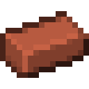
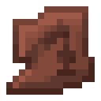
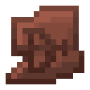
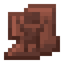
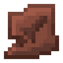
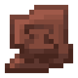
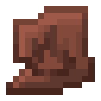
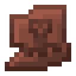
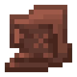
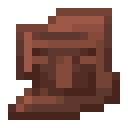
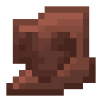
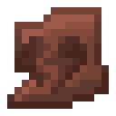
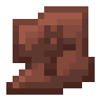
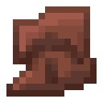
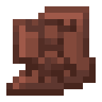
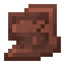
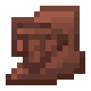
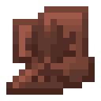
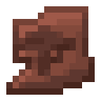
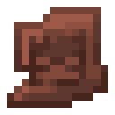
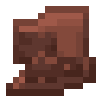
Froglights 3 recipes
/function better_crafts:enable/froglights
/function better_crafts:disable/froglights
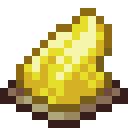
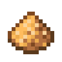
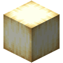
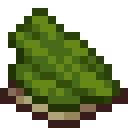
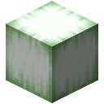
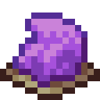
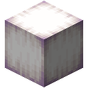
Decraftable Materials 11 recipes
/function better_crafts:enable/decraftable
/function better_crafts:disable/decraftable
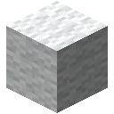
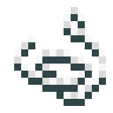
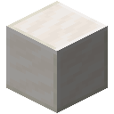
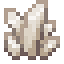
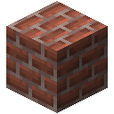
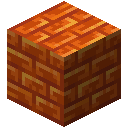
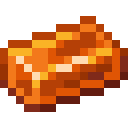
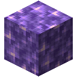
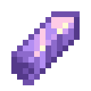
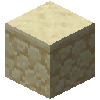
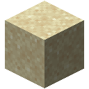
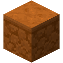
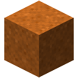
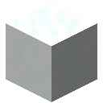
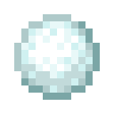
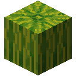
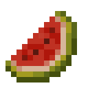
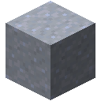
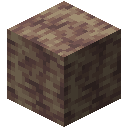
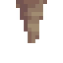
Soul Items 6 recipes
/function better_crafts:enable/soul_items
/function better_crafts:disable/soul_items
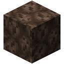
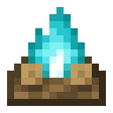
Suspicious Blocks 2 recipes
/function better_crafts:enable/suspicious
/function better_crafts:disable/suspicious
Arrow Bundle 1 recipe
/function better_crafts:enable/arrow_bundle
/function better_crafts:disable/arrow_bundle
Bonemeal Growth 30 recipes
/function better_crafts:enable/bonemeal_growth
/function better_crafts:disable/bonemeal_growth
Dye Crafting 16 recipes
/function better_crafts:enable/dye_crafting
/function better_crafts:disable/dye_crafting
Sculk Family 4 recipes
/function better_crafts:enable/sculk_family
/function better_crafts:disable/sculk_family

Sand Dye 4 recipes
/function better_crafts:enable/sand_dye
/function better_crafts:disable/sand_dye
Utility Blocks 4 recipes
/function better_crafts:enable/utility_blocks
/function better_crafts:disable/utility_blocks

End Progression 2 recipes
/function better_crafts:enable/end_progression
/function better_crafts:disable/end_progression

Amethyst Family 5 recipes
/function better_crafts:enable/amethyst_family
/function better_crafts:disable/amethyst_family
Bulk Crafting 8 recipes
/function better_crafts:enable/bulk
/function better_crafts:disable/bulk
Armor Sets 14 recipes
/function better_crafts:enable/armor_sets
/function better_crafts:disable/armor_sets
Nether Blocks 2 recipes
/function better_crafts:enable/nether_blocks
/function better_crafts:disable/nether_blocks

Dirt & Soil 13 recipes
/function better_crafts:enable/dirt
/function better_crafts:disable/dirt
Miscellaneous 13 recipes
/function better_crafts:enable/miscellaneous
/function better_crafts:disable/miscellaneous

Stone Variants 6 recipes
/function better_crafts:enable/stone
/function better_crafts:disable/stone
Stone Tools & Utility 8 recipes
/function better_crafts:enable/stone_tools
/function better_crafts:disable/stone_tools
Loot Drops 5 recipes
/function better_crafts:enable/loot_drop
/function better_crafts:disable/loot_drop
Commands
General
Admin
/function better_crafts:help
Displays every command available in Better Crafts.
/function better_crafts:enable/all
Enables every custom crafting recipe group.
/function better_crafts:disable/all
Disables every custom crafting recipe group.
/function better_crafts:enable/<group>
Enables one specific recipe group (see the group names in the Recipes section above).
/function better_crafts:disable/<group>
Disables one specific recipe group.
Compatibility
| Version | Status |
|---|---|
| 1.16.x - 1.21.10 | 🟠 Unsupported, but supported with the Better Crafts: Mini Size collection or the Better Crafts: Old Versions |
| 1.21.4 - 1.21.10 | 🟠 Last supported version 1.4.5, and supported with the Better Crafts: Mini Size collection or the Better Crafts: Old Versions |
| 1.21.11 - 26.2.x | ✅ Supported |
| 26.3 snapshots | ✅ Supported |
Installation
1. Download the datapack.
2. Place it inside your world's datapacks folder.
3. Run /reload or restart the world.
4. Have fun!
1. Download the mod.
2. Place it inside your mods folder of your instance.
3. Restart your game.
4. Have fun!
FAQ
Does it work on servers?
Yes, Better Crafts works on multiplayer servers.
Does it require a resource pack?
No, the datapack works without any resource pack.